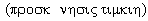

"ИТАК, БУДЕМ СОВЕРШЕННЫ, КАК СОВЕРШЕНЕН ОТЕЦ НАШ НЕБЕСНЫЙ!"
(К вопросу об установке памятника Святому Николаю)
В свое время, в том числе по моей инициативе, при поддержке тогдашнего мэра города Ю.И. Сандюка была внедрена должность архитектора Старого города, в роли которого удалось поработать О.П. Поповой. В результате был разработан и утвержден в Киеве Историко- архитектурный опорный план г. Николаева, определены границы Старого города, выделено более 400 памятников истории и архитектуры города, разработаны правила поведения в Старом городе. Замечу, что подобные планы имеют всего несколько городов Украины. Затем, как водится, эту должность упразднили при А.Я. Бердникове и сегодня Старый город защищать некому. До меня доходят слухи, что в районе Московской и Никольской улиц уже планируется застройка высотного 9-этажного дома, что совершено недопустимо в черте Старого города. Напомню, что еще в советское время было принято решение в старой части города не возводить дома больше пяти этажей. Я вспоминаю, как Эдуард Шорин, Царство ему небесное, бывший тогда заместителем председателя Облисполкома, не зря хвалился передо мной тем, что ему удалось в Обкоме партии отстоять решение не строить 9-ти этажное здание на углу улиц Лягина и Б.Морской, чтобы не заслонить им, рядом расположенную, церковь Рождества Богородицы, хотя тогда это был еще Дом офицеров. А через несколько лет после этого была, слава Богу, отстроена колокольня, и церковь обрела почти прежний вид. Но нынешних архитекторов, это, как видно, не беспокоит. Они сегодня с легкостью вынашивают планы о переделке исторического спуска к старому Ингульскому мосту, разбив его на ступеньки для размещения на них сплошным рядом баров и кафе. Идея вынести торговлю под землю лучше, но ее нельзя осуществить без предварительного историко-археологического обследования подземных ходов. Нужно помнить, что подземные хода в нашем городе являются самым ценным памятником истории! А городские власти никак не задумываются над тем, что подземные хода, исторический ландшафт в старой части города должны сохраняться, равно, как и большинство старинных зданий. Никто не будет возражать против передеки фоновой застройки старой части города. Но, здания, являющиеся памятниками истории и архитектуры должны быть сохранены для будущих поколений, ибо город может утратить свое историческое лицо. Меня, например, радует, как отстраивается и восстанавливает свой вид, благодаря банку "Аваль" (директор С.В. Прудкий), бывший Купеческий дом по ул. Спасской, 22. Это пример, достойный подражания. Вместе с тем, я огорчаюсь по поводу того, что в ходе ремонта 2-х этажного дома по ул. Б. Морской, 62, фасад здания был изменен, на балконе исчезли две внутренние скульптуры, его украшавшие. Точно так же перестроен дом, в котором жил выдающийся николаевец Г.Н. Ге, по ул. Наваринская 25, где так до сих пор не только не установлена мемориальная доска с моей подачи много лет назад, но памятник истории не охраняется как следует и потому оказался в заброшенном состоянии. Более того, сегодня, с чьей-то недоброй руки в среде депутатов Горсовета стали называть этого благороднейшего человека скандалистом. Между тем, он готов был и жизнь свою отдать ради благополучия нашего города, о чем я писал в статье "Депутат городской думы", опубликованной в газете "Вечерний Николаев" 17 апреля 2003 г. Все это черты элементарного бескультурья, которые, к великому сожалению, носят деятельный характер. Разумеется, подобное будет говорить о нас и нашем городе больше, чем все наши словесные выражения любви к нему. Но история сохранит имена всех тех, кто был у власти, когда принимались эти не выстраданные временем решения.
Сейчас уже почти невозможно повернуть назад решение такого важнейшего вопроса для нашего города, как установка памятника Святого Николая в городе, носящем его имя, и это настоящая трагедия. В газете "Вечерний Николаев" на день Святого Николая, 22 мая т.г., появилось обращение Городского головы В.Д. Чайки о сборе средств и приведен вид памятника Святому Николаю на Каштановом сквере. Казалось бы, что в этом благородном, на первый взгляд, деле может быть плохого и предосудительного? Но, спросите любого, кто хоть мало-мальски разбирается в истории христианства, тот сразу же воскликнет: в Православной церкви не принято ставить не то, что памятники, а даже скульптурные изображения Святых! Действительно, войдите в любой Православный храм, вы там не найдете ни одной скульптуры, одни иконы. И, напротив, войдите в наш Католический собор, там вы увидите скульптурное изображение распятого Христа на амвоне. Тот, кто видел католические соборы Европы, мог видеть и скульптурные изображения Святых не только внутри храма, но и снаружи на фронтоне зданий. В чем тут дело и насколько это принципиально и значимо?
Основу христианской морали составляют 10 заповедей, полученных от Бога ветхозаветным пророком Моисеем (память его Православной церковью отмечается 4 сентября) на горе Синай. В частности, вторая заповедь гласит: "Не делай себе кумира и никакого изображения того, что на небе вверху и что на земле внизу, и что в водах ниже земли, не поклоняйся им и не служи им, ибо Я Господь, Бог твой, Бог ревнитель, за вину отцов наказывающих детей до третьего и четвертого рода, ненавидящих Меня, и творящий милость до тысячи родов любящих меня и соблюдающих мои заповеди". (Второзаконие, 6-21) В "Толковом словаре" нашего земляка В.И. Даля читаем: "Кумир - изображение, изваяние языческого божества; идол, истукан или болван. Предмет бестолковой любви, слепой привязанности". Скифских воинов сегодня можно видеть у входа в краеведческий музей, они мало, чем материально и внешне отличаются от проекта памятника Святому Николаю. Такие деревянные болваны стояли в Киеве на Горе и прежде, чем крестить Киев, Владимир Святославович в 988 г. пустил их по Днепру, в водах которого затем окрестил киевлян. Из приведенного текста второй заповеди видно, что она, на первый взгляд, вообще располагала к отказу от использования христианами каких-либо изображений святых и Господа-Бога. Именно это обстоятельство вызвало к жизни на стадии становления правил христианского богослужения такое течение, как иконоборчество. В конце концов, это движение было осуждено Седьмым Вселенским Собором в Никее в 787 г. В "Книге правил" VII Собора дано догматическое определение об иконопочитании, в котором сказано, чтобы иконам воздавали не богопоклонение , но почитальное поклонение . Обратите внимание на существенную разницу в определении вида поклонений иконам, а также на то, что о скульптурных изображениях речь вообще не шла! После разделения христианства, на западное (католическое) и восточное (православное) в 1054 г., последнее более жестко, чем католичество, придерживалось основных догматов церкви, выработанных всеми Вселенскими соборами. Поэтому православие, в отличие от католичества, и не допустило скульптуры святых в церкви, ибо объемностью своей они напоминали языческих кумиров. Икона, как известно, не объемное, а плоское изображение.
Но вот, что важно для нашей темы так это то, что и Православие, и Католичество, смотрят на изображения Святых вне храма, как на кумиров. Ибо только в храме, посвященному Богу, и представля-ющего в замкнутом виде всю Вселенную, их святость имеет силу под защитой Господа. Так что, все памятники, установленные историческим лицам, признанными одновременно и святыми церкви, по смыслу своему не должны быть частью церкви. Но, разумеется, светская власть не имеет морального права их устанавливать без согласования с церковью проекта памятника, места его установки и авторов. Например, памятник Владимиру Крестителю, установленный в Киеве в 1853 г. это все-таки памятник историческому лицу, жившему и действовавшему в Киеве. Но, так как он признан Святым в православном мире, то это отразилось на уважительном отношении к его святости. Выдержано портретное сходство и, кроме того, его вычленили из городской среды, из людской толчеи, и установили почти в недоступном месте, на склоне крутой горы, с крестом в руках, обращенным лицом к Днепру, в водах которого приняла крещение Киевская Русь. И все это сделано для того, чтобы его нельзя было превратить в кумира. ак что, по смыслу своему это не памятник Святому, а символ Крещения Киевской Руси. Тоже самое можно сказать и о памятнике Сергию Радонежскому, но никак не о памятнике Архангелу Михаилу, установленному недавно в Киеве на самом людном месте - площади Независимости.
В упомянутом выше обращении В.Д. Чайки обозначена следующая цель создания памятника: "Знаком благодарности небесному покровителю от жителей города, духовным центром их единения станет памятник Святому Николаю, сооружаемый в Каштановом сквере по инициативе горожан и решению исполкома городского совета." Значит, все-таки речь идет о создании памятника Святому. Но, возникает вопрос: станет ли, на самом деле, знаком благодарности Святому Николаю, проект который принят к исполнению?
Выше уже было сказано, что по своему назначению памятники Святым не ставят. Чтобы ставить памятник Святому Николаю, как историческому лицу, у нас тоже нет оснований, - он здесь не был, по крайней мере, у нас нет этому доказательств. Да и как можно размещать памятник Святому, вокруг которого должна царить молитвенная тишина, рядом с общественным туалетом и в постоянной светской суете на Каштановом сквере?! Скульптурное решение памятника, из-за обобщенности образа Святого Николая (что недопустимо!), возвращает его в языческие времена и сближает его со скифскими кумирами, это не христианин! И это понятно. Ведь творцы всех значимых икон Православия, получая на то духовное благословение, приравнивались к Святым, чаще всего были монахами или в самом крайнем случае были воцерковленными, т.е. находились в постоянном молитвенном состоянии. Ничего этого нельзя сказать о творце нашего памятника. Да, он - верующий, да он - скульптор, но этого, по церковным понятиям, явно недостаточно для создания памятника Святому. Я не говорю уже о том, что ни один воцерковленный верующий просто не взялся бы за сотворение кумира из Святого, считая это грехом! Таким образом, то, что сегодня представлено, как проект памятника Святому Николаю в Николаеве, изначально есть, по виду и духу своему, продолжением коммунистического отношения к Святому Николаю, как ко всем советским кумирам, и потому его реализация выльется, в конечном итоге, к тому же кумиропочитанию (к этому располагает приземленность памятника, расположение в людном месте и т.д.), какое до сих пор еще имеет место в отношении к памятнику Ленину. А это есть прямым нарушением христианской морали! Возникает вопрос: но, может быть все-таки, можно изобразить Святого Николая, как это сказано в обращении Николаевского головы, "небесным покровителем города", т.е. ангелом-хранителем?
Недавно ушедший от нас С.С. Аверинцев, Царство ему Небесное, блестящий знаток многих древнейших языков и Православия, в своем словаре дал такое определение: "Ангелы (греч. - "вестники") - бесплотные духовные существа, наделенные разумом и свободной волей, сотворенные Богом для того, чтобы служить Богу, совершая вечный праздник небесной Литургии, ведя войну с врагами Бога, неся Его волю стихиям и людям. Они либо с безупречной верностью исполняют это назначение, живя только для Него, как "служебные духи" (Евр. 1, 14), для которых быть и служить - одно и тоже, либо, раз и навсегда отпав от Бога в акте измены, сами предстают как враги Бога и людей - бесы. Церковные песнопения называют Ангелов "бесплотными умами". Они "бестелесны", т.е. не связаны косностью, тяжестью, малоподвижностью человеческого или животного тела… Если они не являются по собственной воле в зримом облике, человеческие глаза их не воспринимают…" ("София-Логос", К., 2001, с.29) Итак, наше желание увидеть невидимое, путем материализации нашего Ангела-хранителя, может превратить его в беса! Таким образом, получается, что и в этом случае, как говорил Самюэль Джонстон, мы можем "Благими намерениями вымостить дорогу в ад". "Блаженны, как сказал Иисус, не видевшие и уверовавшие." (Иоан., 20, 29)
Отсюда видно, что, приняв решение об установке памятника Святому Николаю, мы не вполне осознали значение этого акта, затрагивающего всю общину. И потому, взяв часть вины и на себя, хочу молитвенно испросить Бога: "Прости нас, Господи, ибо не ведаем, что творим!"
В своей книге "Город Святого Николая (Древнейшая история)" (Николаев, "Возможности Киммерии", 2002) я кратко описал историю реальной жизни Святого Николая, как исторического лица и Святого, одного из самых почитаемых не только православными и католиками, но и протестантами. Там же я обратился ко всем жителям и властям с просьбой наладить светские и духовные связи с Мирами Ликийскими (находятся в Турции, возле знаменитого курорта Анталия), где жил, действовал и проповедовал Святитель, а также с городом Бари в Италии, где находятся его мощи. Пока что на это откликнулись только яхтсмены во главе с Почетным гражданином нашего города Б.С. Немировым, которые хотели посетить эти места и привезти к 215-юбилею города видеоинформацию об этих святых для нас местах. Но, к сожалению, никто так и не помог им найти для этого важнейшего дела денег. Не подвинулись к делу установления контактов ни на уровне церкви, ни на уровне мэрии, хотя В.Д. Чайка возглавляет Причерноморский клуб, куда входят Турция и Италия. Между тем, вместо установки памятника в Николаеве, нам давно уже нужно было пройти по Святым местам, где он действовал, поклониться мощам Святителя, и установить постоянную связь (паломничество!) с этими поистине святыми для нас духовными ценностями, связанными с памятью Святого Николая!
К великому сожалению, многое из того, что сегодня делается властью в вопросе возрождения духов-ности, является продолжением нашего недавнего коммунистического прошлого. Еще 22 января 1994 г. я написал по этому поводу статью "Без веры жить невозможно!" (в газете "Вечерний Николаев"). И если вдуматься, то, бывшая советская власть, провозгласив атеизм государственной политикой, на деле исповедовала языческое поклонение своим кумирам! Именно на этой волне А.С. Пушкина превратили в советское время в кумира, а сегодня все то же делается и в отношении другого национального гения Т.Г. Шевченко. На этой языческой вере воспиталось не одно поколение и так просто избавиться от нее невозможно. Прости меня, Господи, но эта болезнь коснулась и некоторых церковнослужителей. И поэтому сегодня все уровни власти независимой Украины возлагают венки уже не к памятнику Ленина, а к памятнику Т.Г. Шевченко, а церковнослужители могут благословить и создание памятников святым. Именно поэтому с такой легкостью и даже подъемом в нашем духовно больном обществе воспринялась идея установки памятника Святому Николаю, хотя во всех отношениях, разобранных мною выше, это противоречит фундаментальным нормам христианской морали. Для спасения людей, нам нужно возводить больше храмов, а не ставить кумиры, ибо место святым отведено в церквях. И пусть "бесплотный ум" нашего Ангела-хранителя останется бесплотным, чтобы иметь полную свободу невидимо оказать помощь каждому из нас по своему усмотрению, а не будет стоять прилюдно укрощенным кумиром… Если же мы, действительно, хотим искупить свою вину перед Господом-Богом, то давайте переименуем проспект Ленина в Проспект Святого Николая, а на пересечении его с ул. Пушкинской поставим Символический памятник Святому Николаю, вознеся на высоту главные атрибуты его власти митру и посохи с крыльями Ангела.
В заключение хочу сказать, что, как человек, живущий и действующий в этом городе всю свою сознательную жизнь, как верующий, да к тому же еще и родившийся на день Святого Николая, не могу спокойно наблюдать за действиями, которые, на взгляд непросвященных людей, являются великим благом, а на самом деле являются грехом перед Господом-Богом! И пусть на меня не обижается В.Д. Чайка, к деятельности которого, я отношусь с глубочайшим уважением, но наш город должен быть достойным высокого имени Святителя. Меньше всего я (и прошу не делать этого других!) хотел бы искать виновных в этом деле, ибо и сам себя считаю таковым. Но, здесь, каясь, прошу прощения у Господа-Бога, за всех нас неведающих и не просвещенных!
Мы должны с величайшим уважением и пиететом нести высокое имя Святого Николая, не опуская его Святость до суеты сует и не превращая его в кумира. И поэтому, я взываю к членам исполкома и депутатам Горсовета, с просьбой, чтобы "…Господь-Бог не наказал за нашу вину детей до третьего и четвертого рода…", не брать греха на душу всей николаевской общины и ограничиться сегодня установкой часовни Святого Николая, вместо греховного созидания кумира! В Нагорней проповеди по этому поводу Христом сказано: "Итак, будьте совершенны, как совершен Отец ваш Небесный" (Матф. 5, 48). Здесь под словом совершенный следует понимать, в данном случае, непорочность. ("Толковая Библия", Петерб., 1913, т.3, с. 109)
А. Золотухин, председатель Пушкинского клуба.